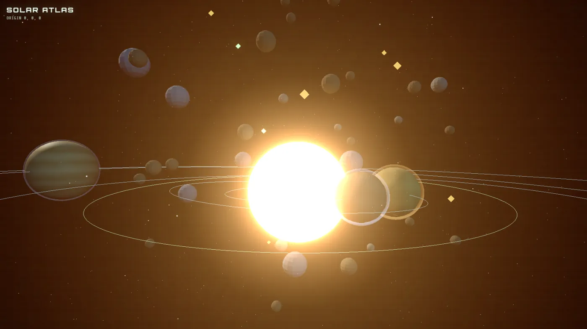
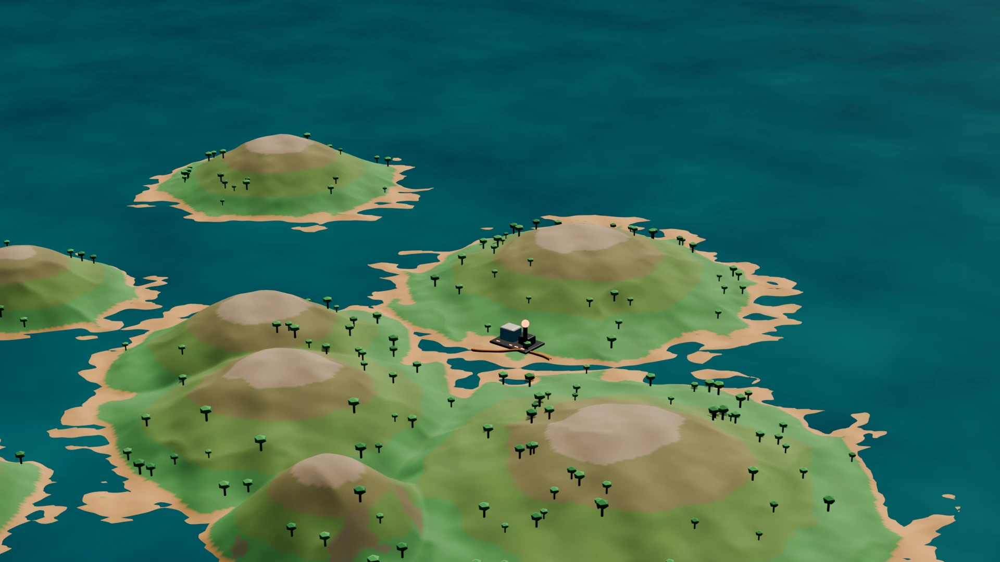
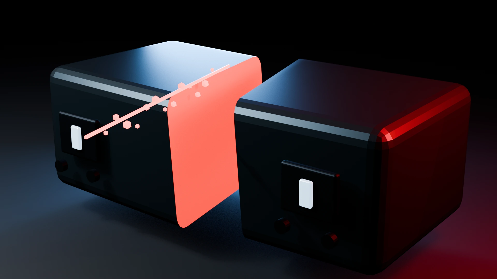

Destimmer
A WebGL art piece you steer: fractal cathedrals, particle swarms and a generative music engine with live controls for key, tempo and groove.
Game developer and 3D technical artist. I build VR gameplay and real-time art for Shipwreck Discovery, in Early Access on Steam and Meta Quest.
A VR diving game set on real wrecks sunk as artificial reefs off Destin, Florida. I'm on the team at Lionfish Central, working on gameplay systems and the real-time art pipeline.
Steam Meta Quest Official site
Shipwreck Discovery and its store pages belong to Lionfish Central. The source is private.


A pixel-art arcade game for Android and iOS. Lionfish have taken the reef; you dive in, spear them and bring the reef back across ten ocean habitats.

Real-time space strategy in the browser: the pace of an .io game with a slimmed-down grand-strategy layer. You never leave the galaxy view.
Things I've built that you can try right now, no install.
A WebGL art piece you steer: fractal cathedrals, particle swarms and a generative music engine with live controls for key, tempo and groove.
The browser view of SongDeconstructor, my Python tool that breaks songs into beats, tempo, chroma and segments. Scrub through an analysed track.
 Fly it
Fly it
An FPV drone sim in Three.js with a rate-mode flight model, a generated frontline and air defence that shoots back. Keyboard or gamepad.

Play itAnother developer's browser space game. My merged PR reworked the Solar Atlas: navigation, orbit selection and pointer-lock fixes.
I write Blender add-ons in Python for the jobs I keep doing by hand: remeshing, edge loops, terrain and hard-surface cuts.

Tiled procedural terrain. This archipelago is four tiles and 264,196 vertices, written out with an export manifest.

Cut through what you see. The mesh splits into separate objects with capped faces and an adjustable kerf.
A VR shooter set inside a computer, in pre-production. You're a freshly booted antivirus process. Every kill unlocks admin commands you type on a wrist terminal to spawn turrets, walls and vehicles in a destructible procedural city.

I run CurioCrafter on YouTube: 88K subscribers, 347 videos. Making things for a feed taught me what holds a stranger in the first two seconds, and that carries straight into game feel and onboarding.
These shorts for Shipwreck Discovery come out of a pipeline I built: Claude (Opus) drives Blender to build, animate and render the shots, ElevenLabs voices the narration, and I direct and cut them.
Lionfish Central · Shipwreck Discovery
VR gameplay in Godot and OpenXR, coral and wreck assets from retopology to GLB, regression tests for VR fixes.
CurioCrafter
My own games, Blender add-ons, and a YouTube channel that grew to 88K subscribers.
Productive Electric LLC · Malm Electrical Contractors
Commercial installs, jobsite safety and field troubleshooting.
Job Corps
A season on a fire crew, plus electrical pre-apprenticeship training.
Toolkit Godot 4 · GDScript · OpenXR · Python · Blender API · TypeScript · Three.js · WebGL · C++ · Git